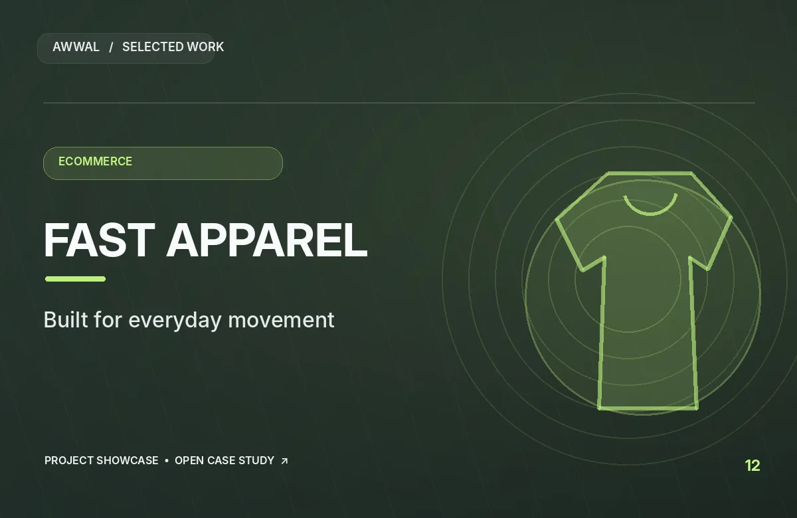

PROJECT 12 / AWWAL PRODUCTIONSWEB DEVELOPMENT / FASHION
Fast Apparel.
Direct-To-Consumer Apparel Store website portfolio project. Explore the brand context and view the original website.
Visit project website
PROJECT SHOWCASEVISIT THE LIVE WEBSITE ↗
PROJECTFast Apparel
SECTOREveryday Apparel / Online Store
CATEGORYE-commerce website
WEBSITEfastapparel.co ↗
The projectA closer
A closer
look.
Fast Apparel: Direct-to-consumer apparel store
Apparel shoppers benefit from clear collections, familiar product options and concise information that helps them decide confidently.
Mobile navigation, visible product details and consistent merchandising are important considerations for fashion e-commerce experiences. This overview is based on the project category and supplied link; exact deliverables and results have not been independently verified.